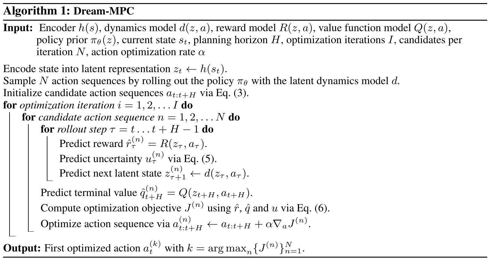
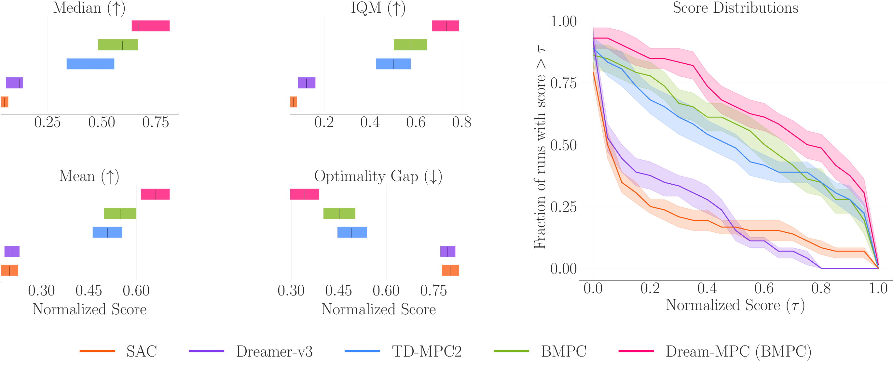
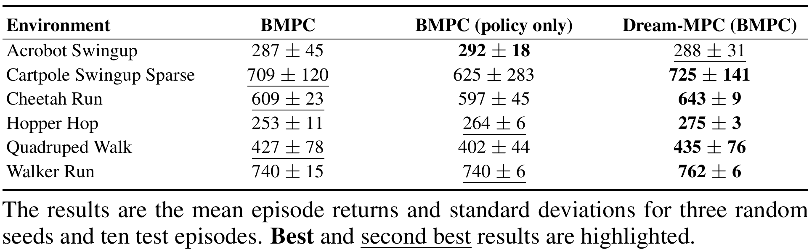
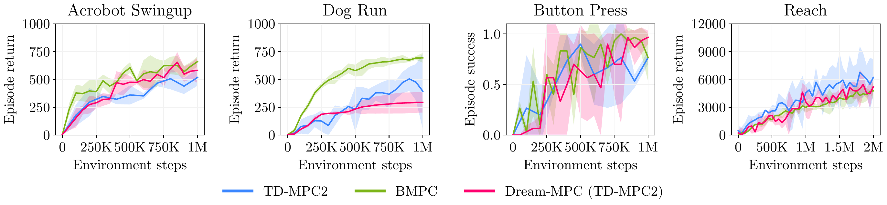
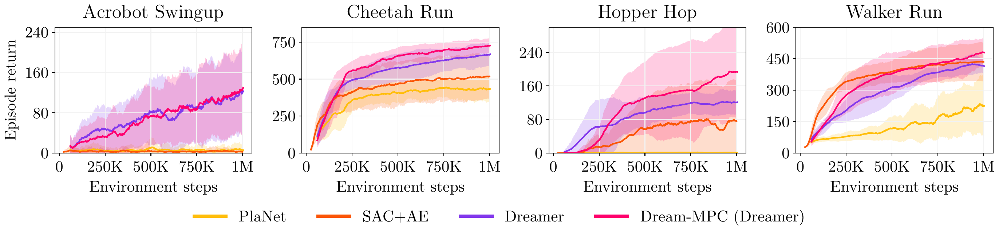

State-of-the-art model-based Reinforcement Learning (RL) approaches either use gradient-free, population-based methods for planning, learned policy networks, or a combination of policy networks and planning. Hybrid approaches that combine Model Predictive Control (MPC) with a learned model and a policy prior to leverage the advantages of both paradigms have shown promising results. However, these approaches typically rely on gradient-free optimization methods, which can be computationally expensive for high-dimensional control tasks.
While gradient-based methods are a promising alternative, recent works have empirically shown that gradient-based methods often perform worse than their gradient-free counterparts. We propose Dream-MPC, a novel approach that generates few candidate trajectories from a rolled-out policy and optimizes each trajectory by gradient ascent using a learned world model, uncertainty regularization and amortization of optimization iterations over time by reusing previously optimized actions.
Our results on 24 continuous control tasks show that Dream-MPC can significantly improve the performance of the underlying policy and can outperform gradient-free MPC and state-of-the-art baselines.
We perform local trajectory optimization with a latent dynamics model. Instead of sampling hundreds or thousands of action sequences at each step as done by gradient-free, sampling-based methods such as the Cross-Entropy Method (CEM) or Model Predictive Path Integral (MPPI), Dream-MPC considers few samples from the policy prior and optimizes each action sequence by using gradient ascent to maximize the objective J. The first action with the highest predicted return is applied, and the procedure is repeated for the next time step.

For our experiments, we integrate Dream-MPC into TD-MPC2 and BMPC and evaluate it on 24 environments from the DeepMind Control Suite, Meta-World and HumanoidBench.
We integrate our method into BMPC by replacing the MPPI planner with Dream-MPC during inference. As the aggregated performance metrics across all 24 tasks show, Dream-MPC can improve the performance of the underlying policy and outperform MPPI when using BMPC as a basis. While for TD-MPC2 our method can also improve the performance of the policy, we can not consistently match the performance of MPPI. This highlights the need for a good initial proposal for gradient-based MPC.

Furthermore, we show that our method also works well with image-based observations and can outperform MPPI.

Additionally, we evaluate the performance when enabling gradient-based planning already during training using TD-MPC2 as a basis.

On top of the quantitative evaluation, we also provide videos of the evaluation episodes for the different environments when using Dream-MPC to optimize the actions at inference.
We further integrate our method into Dreamer and also find improvements in sample efficiency and asymptotic performance when enabling planning during training.

@inproceedings{spieler2026dreammpc,
author = {Spieler, Jonathan and Behnke, Sven},
title = {Dream-{MPC}: Gradient-Based Model Predictive Control with Latent Imagination},
booktitle = {International Conference on Machine Learning (ICML)},
year = {2026},
}